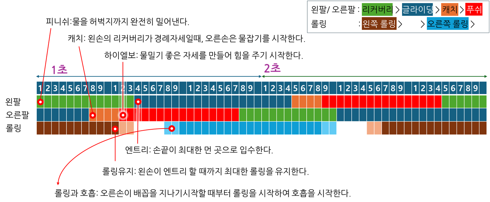
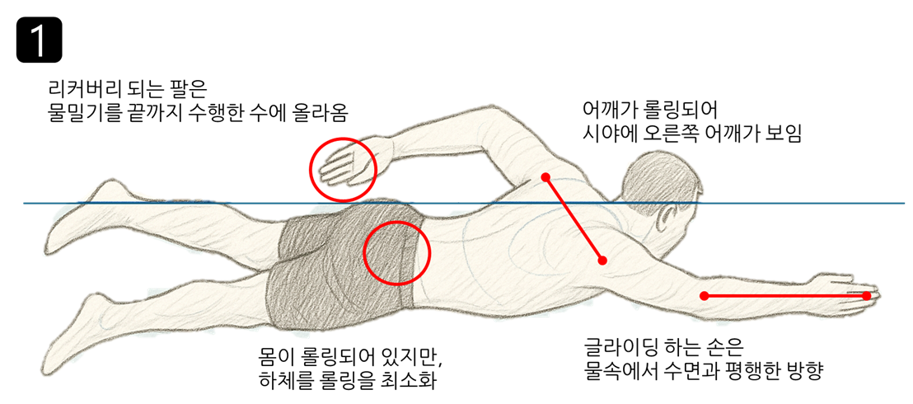
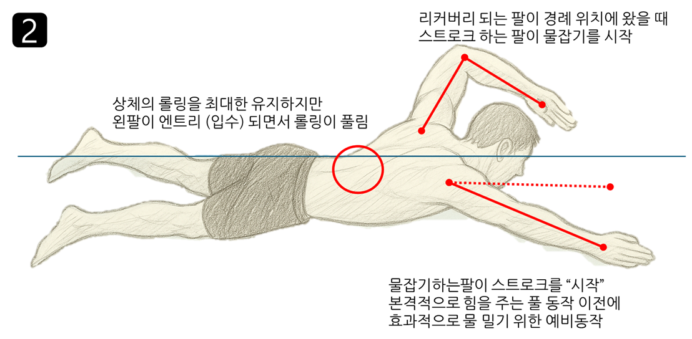
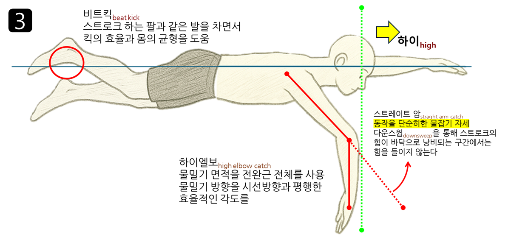
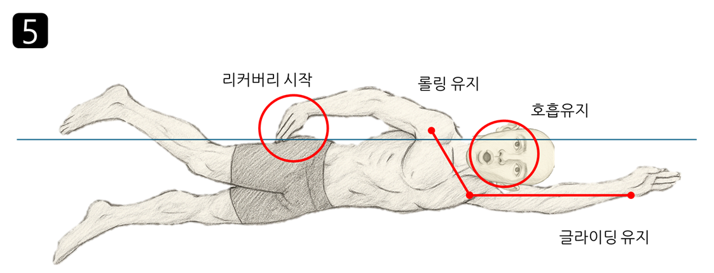
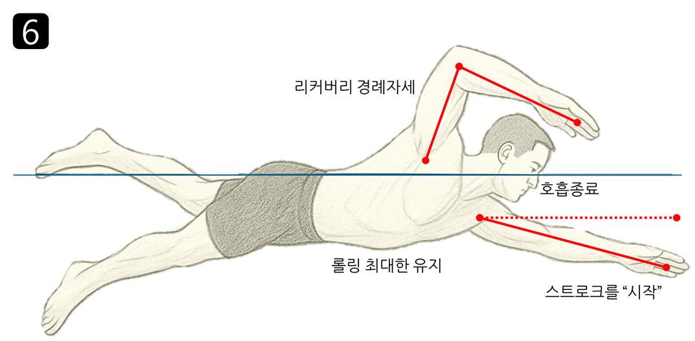
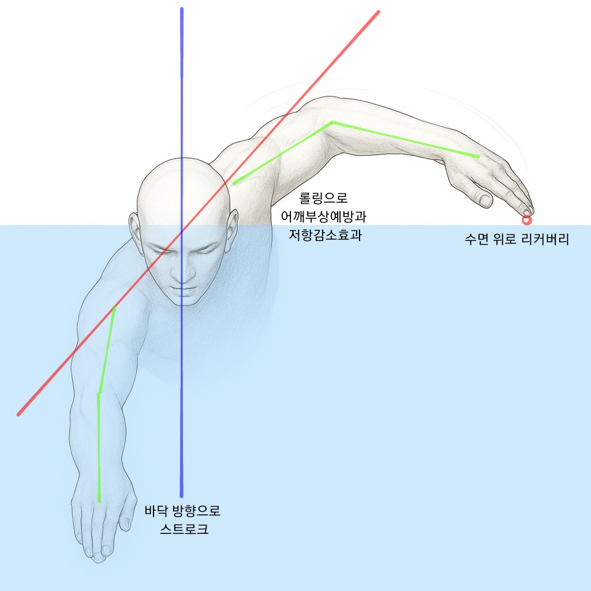
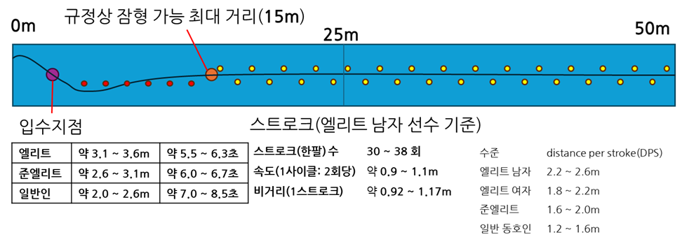

자유형freestyle의 국제규격은 '자유free(= 제한없는any)' 형식을 의미합니다. 자유형 공식대회에서 어떠한 영법을 구사해도 상관이 없지만 사실상 크롤형crawl(기어가다)이 주류입니다.
자유형은 '팔돌리기'stroke와 '자유형 발차기'flutter kick로 이루어져 있습니다. '호흡'은 팔돌리기 중, 편리한 방향으로 마실 수 있습니다.
발차기
"발차기가 중요하다는건 알겠는데, 킥판 잡고 2바퀴만 돌아도 죽을 것 같사옵니다."
"자유형의 대부분의 추진력은 팔돌리기에서 나옵니다(85 ~ 90%).
발차기하다가 수영을 그만 두느니, 대충 차고 오래 다니는 것이 낫습니다."
발차기flutter kick 훈련
| No | 훈련 | 내용 |
|---|---|---|
| 1 | 물속에서 가만히 서서 발차기(앞뒤로 젓기) | 힘을 빼고, 가만히 서서 무릎과 발목을 펴서 발을 저어봅니다. |
| 2 | 데크에 상반신 올린체 발차기 | 발목이 물 위로 살짝 나오게 하려면 어떻게 저어야 하는지 연습합니다. |
| 3 | 수영장 모서리 잡고 발차기 | 하반신이 과도하게 잠기지 않도록 다운킥을 신경써서 저어봅니다. |
| 4 | 킥판kickboard잡고 발차기 | 킥판의 뒤를 두손으로 잡습니다. 앞으로 뻗은 두 팔은 귀에 붙입니다. 호흡은 앞으로 하거나 일어섭니다. |
| 5 | 풀부이Pull buoy(부표)로 발차기 | 허벅지가 벌어지지 않게 발차기 합니다. 가랑이를 벌려서 일어나면 쉽게 일어날 수 있습니다. |
- 목표
SwimGym: Flutter Kick, Youtube - 다리를 띄움. 따라서 저항이 감소
- 팔돌리기stroke를 안정된 자세로 할 수 있도록 보조
- 지속적인 추진력 제공(총 추진력의 약 10~15% 담당)
- 자세
- 다리와 발목의 힘을 빼고 곧게 펴 줍니다.
- 발끝은 뾰족하게pointing기본 자세입니다.
-
일정한 박자로 업킥과 다운킥을 수행합니다.
- 업킥up kick: 무릎을 살짝 구부리고 발목이 물밖에 살짝 나오는 정도로 발을 물 위로 올립니다.
- 과도한 무릎 사용은 저항을 만들어 냅니다.
- 다운킥down kick: 무릎을 살짝 구부리고 발을 물 속으로 밀어 넣습니다.
- 다운킥에서 다리가 벌어지는 정도는 30 - 45 cm(12 - 18 inchs wide)가 적당합니다.
MySwimPro, Flutter Kick, Youtube(shorts) - 발목은 킥 동작 중 자연스럽게 구부러질 수 있습니다flexing.
- 발등으로 물을 아래로 눌러 하체가 전체적으로 가라앉지 않도록 합니다.
- 발차기는 수면 가까이 차는 것이 쉽고, 효율적입니다.
- 물보라가 없다면, 하체가 가라앉아 있을 수 있습니다.
- 다리와 발목의 힘을 빼고 곧게 펴 줍니다.
.png) 자유형킥 올바른자세
"자유형킥 올바른자세(설명).png", iseohyun.com(AI제작), CC-BY-SA
자유형킥 올바른자세
"자유형킥 올바른자세(설명).png", iseohyun.com(AI제작), CC-BY-SA
.png) 자유형킥 체크포인트
"이상한 발차기(설명).png", iseohyun.com(AI제작), CC-BY-SA
자유형킥 체크포인트
"이상한 발차기(설명).png", iseohyun.com(AI제작), CC-BY-SA
.png) 하체가 가라앉는 이유
"자유형킥 틀린자세(설명).png", iseohyun.com(AI제작), CC-BY-SA
하체가 가라앉는 이유
"자유형킥 틀린자세(설명).png", iseohyun.com(AI제작), CC-BY-SA
- 체크포인트
- 무릎을 과도하게 사용하고 있는지 확인
- 자세를 익히는 중인데, 너무 빨리 차려고 하는지 확인
- 발목을 접고 있는건 아닌지 확인
- 물 밖으로 발이 과도하게 나와서 물보라가 일어나는지 확인
- 다운킥이 잘 되지 않아서 하반신이 잠기는지 확인
비트킥
비트킥beat kick의 기본 아이디어는 "오른손 스트로크 + 오른발 킥 = 균형", "왼손 스트로크 + 왼발 킥 = 균형"입니다.
| 킥 | 타이밍 | 비고 | ||||||
|---|---|---|---|---|---|---|---|---|
| 2 비트킥 | 손 | 왼손 | 오른손 | 장거리용 | ||||
| 발 | 왼발 | 오른발 | ||||||
| 4 비트킥 | 손 | 왼손 | 오른손 | 3+1 전략 2+2로는 규형을 맞출 수 없다. |
||||
| 발 | 왼 | 오 | 왼 | 오 | ||||
| 6 비트킥 | 손 | 왼손 | 오른손 | 스프린트sprint | ||||
| 발 | 왼 | 오 | 왼 | 오 | 왼 | 오 | ||
스트로크
팔돌리기stroke 구분 동작은 다음과 같습니다.
 자유형 팔돌리기 동작구분
"IMG_9341.jpg", LUNA's daily, 네이버 블로그, 저작권 요구사항 불명
자유형 팔돌리기 동작구분
"IMG_9341.jpg", LUNA's daily, 네이버 블로그, 저작권 요구사항 불명

스트로크 타이밍 "스트로크타이밍.png", iseohyun.com, CC-BY-SA| 단계 | 영문 | 내용 |
|---|---|---|
| 입수 | entry |
팔을 물에 넣는 동작
|
| 익스텐션 | extension |
손을 앞으로 쭉 뻗으며 글라이딩gliding이 발생하는 구간
|
| 물잡기 | catch | 입수한 팔의 팔꿈치를 살짝 구부려서 물을 당길 준비하는 동작 |
| 당기기 | pull | 손바닥부터 발꿈치까지 넓은 면적을 사용하여 물을 당기는 동작 |
| 물밀기 | push | 팔을 허벅지까지 밀어 물을 밀어내는 동작 |
| 피니쉬 | finish | 손을 물밖으로 빼기 전 동작 |
| 리커버리 | recovery |
팔을 물 위로 들어올려 물잡기 이전 상태(최초)로 되돌아갑니다. 하이엘보high elbow(팔꺽기): 팔꿈치를 접어 적은 에너지로 동작을 수행합니다. |
※ 글라이딩과 팔꺾이는 처음 스트로크를 배울 때, 대체로 생략합니다.
- 팔을 편 리커버리는 기록단축을 위한 스프린트와 접영에 사용됩니다.
- 팔꺽이(하이엘보) 리커버리는 중장거리에 적합합니다.
- 두 영법 다 시전 할 수 있어야 합니다.

오른손 글라이딩 "1.오른손글라이딩(설명).png", iseohyun.com(GPT생성), CC-BY-SA
캐치 타이밍 "2.왼손경례자세(설명).png", iseohyun.com(GPT생성), CC-BY-SA
하이엘보캐치 "3.하이엘보캐치.png", iseohyun.com(GPT생성), CC-BY-SA.png) 롤링 타이밍
"4.롤링의 시작(설명).png", iseohyun.com(GPT생성), CC-BY-SA
롤링 타이밍
"4.롤링의 시작(설명).png", iseohyun.com(GPT생성), CC-BY-SA

글라이딩 중에도 호흡은 유지 "5.롤링유지.png", iseohyun.com(GPT생성), CC-BY-SA
호흡의 종료 타이밍 "6.호흡유지.png", iseohyun.com(GPT생성), CC-BY-SA 팔꺽기
"img.png", 'kwonsemin.tistory.com/149' form 'minghouse.tistory.com', CC:??
팔꺽기
"img.png", 'kwonsemin.tistory.com/149' form 'minghouse.tistory.com', CC:??

롤링
- 롤링이 충분히 되지 않으면, 리커버리하는 팔과 어깨에 부담이 갑니다.
- 롤링으로 인해 스트로크하는 팔이 과도하게 몸 안쪽으로 들어오면 중심이 무너질 수 있습니다.
- 상체가 롤링이 되더라도 하체가 일정하게 유지되는것이 기록적으로 도움이 됩니다.

올바른 자세 "올바른자세(설명).jpg", iseohyun.com(AI생성), CC-BY-SA.jpg) 충분하지 않은 롤링
"롤링과 어깨부상(설명).jpg", iseohyun.com(AI생성), CC-BY-SA
충분하지 않은 롤링
"롤링과 어깨부상(설명).jpg", iseohyun.com(AI생성), CC-BY-SA
.jpg) 중심이 무너지는 자세
"중심이 무너지는(설명).jpg", iseohyun.com(AI생성), CC-BY-SA
중심이 무너지는 자세
"중심이 무너지는(설명).jpg", iseohyun.com(AI생성), CC-BY-SA
빠른 수영을 위한 도움
faster-freestyle-swimming-part-1
Faster Freestyle Swimming Part 1, vasatrainer.com, 2017.3.27
-
high elbow catch / early vertical forearm
 하이 엘보 케치
"Screen-Shot-2017-02-13-at-7.36.51-PM.png", vasatrainer.com, CC:??
하이 엘보 케치
"Screen-Shot-2017-02-13-at-7.36.51-PM.png", vasatrainer.com, CC:??
하이 엘보 케치란, 물잡기catch를 할 때, 팔꿈치elbow를 일어선 자세에서 눈 높이까지 들어올리는 것을 말합니다. 이 때, 들어올려진 팔꿈치는 구부러져 팔꿈치 이하 손끝까지가 몸통과 수직을 이룹게 합니다.
이 자세는 기존에 팔과 어깨 근육만 사용하던 것에서, 더 큰 몸통 근육을 사용하게 해줌으로써, 실험적으로 2배가량의 힘을 발휘합니다.
-
손끝의 방향은 바닥으로
하이 엘보 케치를 할 때, 손끝의 방향이 수영장 바닥방향을 가리키도록 하는 것이 좋습니다. 만약 손바닥이 몸통 바로 아래를 지나거나 너무 벌어지면 큰 힘을 발휘하기 힘들어집니다.
-
손 끝이 아닌, 손목에 힘을
손 끝으로 물을 밀면 팔꿈치와 어깨를 사용하지만, 손목으로 물을 밀면 광배근을 사용하게 됩니다.
-
초반에 밀자
Old style에서 손바닥을 S자로 움직이면서 마지막에 힘을 쏟으라고 배웠었습니다. 하지만, 최근에는 스트로크 초반에 힘을 쏟는 것이 더 효율적이라고 합니다.
-
리커버리는 팔이 쉬는 순간
물을 끝까지 미는 동작이 리커버리에 도움이 되지 않을 수 있다.
(프로가 아닌 생활체육이라면) 어깨가 부담 될 정도로 물을 밀기보다 본인이 견딜 수 있는 수준까지 밀면서, 훈련이 되면 조금씩 강도를 올리는 것도.
선수들의 영법 비교
박태환 vs 김우민
아시안 게임 3관왕 박태환
김우민 영법 차이 2가지 글라이드 다운스위프
, 수영강사영철, Youtube, 2023. 10. 6.
| 항목 | 박태환 | 김우민 |
|---|---|---|
| 출생 | 1989.9.27 | 2001.8.24 |
| 주요 업적 |
|
|
| 주종목 | 자유형 200m, 400m | 자유형 400m, 800m |
| 다운스윕 downsweep |
수행 전면으로 체중 이동 목적 |
생략(바로 하이엘보케치) 어깨에 젓산이 쌓이지 않는 것이 중요 |
| 글라이딩 gliding |
안쪽(중앙) 뚫고가는 힘이 중요 |
바깥쪽(진행방향) 몸의 벨런스가 무너지지 않는 것이 중요 |
팔돌리기 훈련
| No | 훈련 | 내용 |
|---|---|---|
| 1 | 지상훈련 | 킥판을 바닥에 깔고, 배를 대고 누운 상태에서 팔을 저어봅니다. |
| 2 | 걸어가면서 팔돌리기 (스트레이트 암) |
걸어가면서 팔을 저어봅니다. 엔트리에서 엄지가 먼저 입수합니다. 피니쉬에서 새끼가 먼저 출수합니다. 피니쉬 후, 급하게 리커버리 하지 않도록 주의합니다. 리커버리는 어깨에 부담이 가지 않는 정도로만 팔을 들어올려 수행합니다. |
| 3 | 스트로크(킥판) |
수평뜨기 자세에서, 엔트리부터 피니쉬까지 연습합니다. 손바닥과 팔을 쭉 펴고 어깨를 돌려서 손바닥으로 물을 뒤로 밀어냅니다(캐치 동작은 생략합니다). 1회 수행 후 일어섭니다. |
| 4 | 스트로크(킥판) + 킥 | 킥판을 잡고 발차기를 하면서 팔을 저어봅니다. |
| 5 | 사이드 킥(킥판) | 왼손으로 킥판을 잡고, 오른손은 피니쉬 자세를 취합니다. 몸통을 전체적으로 오른쪽으로 돌려 호흡이 가능할 정도까지 돌려줍니다. 머리는 왼판에 붙어 있어야 합니다. 다운킥이 물을 눌러 줄 수 없어 하체는 가라앉습니다. 롤링이 되었을 때, 어떤 느낌인지 감을 잡습니다. |
| 6 | 롤링 스트로크(킥판) | 롤링을 하면서 팔을 저어봅니다. 대략 팔이 중간 정도 저었을 때, 롤링을 시작 하면서 호흡을 시도합니다. 롤링의 끝은 리커버리가 끝나갈 때 마무리됩니다. 롤링으로 인해 어깨의 가동범위가 늘어난 만큼, 리커버리의 팔을 더 높게 들어줍니다. |
| 7 | 하이엘보 물잡기 |
주먹쥔 상태로 스트로크, 전환근으로 물밀기 연습 단계적 학습
|
| 8 | 글라이딩 | 효율적인 물잡기, 완벽한 푸쉬와 피니쉬자세, 정확한 롤링을 통해 최소한의 스트로크로 완주하는 연습을 합니다. 피니쉬 이후 스트림라인이 유지되는 것에 신경씁니다. |
| 9 | 풀부이+글라이딩 | 우아하고, 장거리 수영을 위해 킥을 하지 않고 효율적인 스트로크를 연습합니다. |
| 10 | 팔꺾기 | 리커버리에서 팔을 굽혀 수행합니다. |
호흡
"호흡이 흐트러지면, 동작을 신경 쓸 여유가 없어진다."
"땅 위에서 깊고, 격렬하게 10번 호흡을 해보자. 숨이 차고 어지럽다. 숨을 많이 쉰다고 숨이 안 차는게 아니다. 참고로 명상할 때 1분에 4~6회 쉰다."
-
내쉴 때 코로(음~~~, 천천히), 마실 때 입으로(프헙!, 빠르게)
- 코로 내쉬는 이유는 코로 물이 들어가기 때문입니다.
- 얼굴 입수시에 살짝 내쉬면, 코로 물을 마시는 것을 방지할 수 있습니다.
- 입은 동전만큼 벌려서 빠르게 흡입합니다.
- 숨을 다 벹지 않습니다.
- 호흡은 구명조끼의 역할을 합니다. 너무 많이 벹으면 몸이 가라앉습니다. 항상 일정량의 산소를 가지고 있는것이 유리합니다.
- 너무 많이 벹으면 숨이 찹니다.
- 고개를 과도하게 돌리지 않도록 주의
- 얼굴의 절반정도 물 밖으로 나오는 것이 유리
- 옆 45도 아래를 보는 것이 이상적
- 호흡을 벹는 타이밍: 마시기 전에 미리 벹습니다.
- 숨을 미리 벹어놓지 않고, 롤링 할 때 벹고 마시려면 여유가 없습니다.
- 호흡을 하자마자 벹지 않습니다.
- 롤링이 시작되기 전(오른팔이 허리춤을 지나갈 때 즈음, 개인차) 벹습니다.
- 호흡을 하기 위해 팔을 과도하게 아래로 젓고 있지 않는가?
- 증상: 호흡을 할 때, 왼팡로 물을 누릅니다.
- 교정: 킥판을 잡고 오른 팔만 젓습니다. 왼 팔이 물속으로 깊게 들어가지 않도록 의식하면서 젓습니다.
기록단축

자유형 50m "자유형50미터.png", iseohyun.com, CC-BY-SA-
잠영과 돌핀킥
- 대회 규정상 허용된 최대 거리는 15m이다.
- 선수기준 스타트에서 5 ~ 8회, 턴에서 4 ~ 6회 돌핀킥을 한다.
- 돌핀킥이 좋은 선수는 1회당 비거리가 좋고, 영법이 빠르면 빠르게 부상하는 것도 전략
- 돌핀킥 1회당 0.5 ~ 0.8초
- 돌핀킥이 많으면 체력에 부담, 적으면 속도가 저하(최적의 갯수를 찾아야 하는 이유)
- 엘리트 선수들 기준, 15m구간에서 자유형 대신 잠영으로 단축되는 기록은 약 1.58초
- 잠영 총 소요시간은 남자/여자/일반인 기준 5.5+0.8 / 6.0+0.7 / 7.0+1.5초
-
구간별 기록
구간별 기록 구간 거리 시간 스트로크 횟수 속도 비거리(DPS) 템포(rate) 잠영 15m 5.5초 돌핀킥 5~8회 2.5 ~ 2.8m/s 자유형 35m 15.0초 스트로크 15~19회 2.0 ~ 2.2m/s 2.2 ~ 2.6m 0.9 ~ 1.1s(54~66 cycle/m)